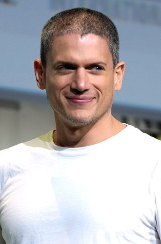

מייקל סקופילד נולד ב- 10 באקוטובר 1974,
הוא דמות בדיונית ראשית בסדרת המתח האמריקאית "נמלטים".
דמותו מגולמת על ידי השחקן וונטוורת' מילר.
כאשר אביו עזב את משפחתו בחר מייקל לשנות את שם משפחתו לשם אמו - סקופילד,
ולינקולן בחר להישאר עם ברוז.
לאחר מות אמם, כשמייקל ולינקולן היו בני 11 ו-15, לינקולן התדרדר לחיי פשע,
בעוד שמייקל נשאר בבית הספר והפך להיות תלמיד מצטיין.
עם זאת, לינקולן המשיך לדאוג למייקל ולכלכל אותו.
לינקולן, בהבינו את הפוטניאל הטמון במייקל, לווה 90,000 דולר מאנשים בעולם התחתון,
והעניק אותם למייקל בטענה שזה חצי מכספי ביטוח החיים של אמם.
הכסף הזה שימש את מייקל כשכר לימוד באוניברסיטה ובזכות הכסף הזה הופך מייקל למהנדס בניין.
בשנים שלפני תחילת העלילת הסדרה, הקשרים בין מייקל ולינקולן לא טובים,
"שכר הפך לעובד בכיר בחברת אדריכלות, מאס בלהיות "האח הגדול של אחיו הגדול .
כשלינקולן נכלא ונידון למוות באשמת רצח טרנס סטדמן, מייקל לא האמין בחפותו,
אך כשוורוניקה דונובן, חברת ילדות של מייקל ועורכת הדין של השניים,
מגלה לו על עניין 90,000 הדולרים
שנתן לינקולן למייקל, הוא מבין שאחיו הוא לא מי שחשב שהוא ומחליט לעזור לו.
וונטוורת' ארל מילר השלישי, נולד ב-2 ביוני 1972,
הוא שחקן, מפיק ודוגמן בריטי-אמריקאי
התפרסם בשל כיכובו בסדרת הטלוויזיה "נמלטים",
בתור מייקל סקופילד, ידוע גם בתור לאונרד סנארט
או קפטן קור בסדרת יקום החץ הפלאש או אגדות המחר.
לעמוד השחקן ב-IMDB